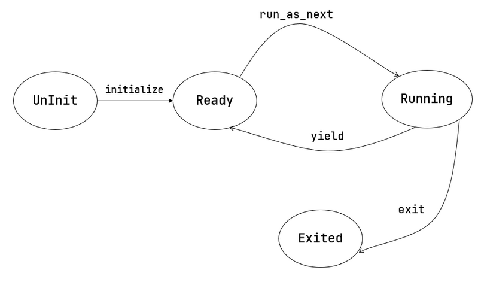

多道程序放置
在第二章中，内核让所有应用都共享同一个固定的起始地址。 正因如此，内存中同时最多只能驻留一个应用，
要一次加载运行多个程序，就要求每个用户程序被内核加载到内存中的起始地址都不同。 为此，我们编写脚本 user/build.py 为每个应用定制各自的起始地址。 它的思路很简单，对于每一个应用程序，使用 cargo rustc 单独编译， 用 -Clink-args=-Ttext=xxxx 选项指定链接时 .text 段的地址为 0x80400000 + app_id * 0x20000 。
多道程序加载
在第二章中负责应用加载和执行的子模块 batch 被拆分为 loader 和 task ， 前者负责启动时加载应用程序，后者负责切换和调度。
其中， loader 模块的 load_apps 函数负责将所有用户程序在内核初始化的时一并加载进内存。
#![allow(unused)] fn main() { pub fn load_apps() { extern "C" { fn _num_app(); } let num_app_ptr = _num_app as usize as *const usize; let num_app = get_num_app(); let app_start = unsafe { core::slice::from_raw_parts(num_app_ptr.add(1), num_app + 1) }; // clear i-cache first unsafe { asm!("fence.i"); } // load apps for i in 0..num_app { let base_i = get_base_i(i); // clear region (base_i..base_i + APP_SIZE_LIMIT) .for_each(|addr| unsafe { (addr as *mut u8).write_volatile(0) }); // load app from data section to memory let src = unsafe { core::slice::from_raw_parts(app_start[i] as *const u8, app_start[i + 1] - app_start[i]) }; let dst = unsafe { core::slice::from_raw_parts_mut(base_i as *mut u8, src.len()) }; dst.copy_from_slice(src); } } }
第 个应用被加载到以物理地址 base_i 开头的一段物理内存上，而 base_i 的计算方式如下：
#![allow(unused)] fn main() { fn get_base_i(app_id: usize) -> usize { APP_BASE_ADDRESS + app_id * APP_SIZE_LIMIT } }
我们可以在 config 子模块中找到这两个常数， APP_BASE_ADDRESS 被设置为 0x80400000 ， 而 APP_SIZE_LIMIT 和上一章一样被设置为 0x20000 。这种放置方式与 user/build.py 的实现一致。
任务切换
任务切换 ， 即应用在运行中主动或被动地交出 CPU 的使用权，内核可以选择另一个程序继续执行。 内核需要保证用户程序两次运行期间，任务上下文（如寄存器、栈等）保持一致。
任务切换的设计与实现
任务切换与上一章提及的 Trap 控制流切换相比，有如下异同：
与 Trap 切换不同，它不涉及特权级切换，部分由编译器完成；
与 Trap 切换相同，它对应用是透明的。
事实上，任务切换是来自两个不同应用在内核中的 Trap 控制流之间的切换。 当一个应用 Trap 到 S 态 OS 内核中进行进一步处理时， 其 Trap 控制流可以调用一个特殊的 __switch 函数。 在 __switch 返回之后，Trap 控制流将继续从调用该函数的位置继续向下执行。 而在调用 __switch 之后到返回前的这段时间里， 原 Trap 控制流 A 会先被暂停并被切换出去， CPU 转而运行另一个应用的 Trap 控制流 B 。 __switch 返回之后，原 Trap 控制流 A 才会从某一条 Trap 控制流 C 切换回来继续执行。
我们需要在 __switch 中保存 CPU 的某些寄存器，它们就是 任务上下文 (Task Context)。
下面我们给出 __switch 的实现：
.altmacro
.macro SAVE_SN n
sd s\n, (\n+2)*8(a0)
.endm
.macro LOAD_SN n
ld s\n, (\n+2)*8(a1)
.endm
.section .text
.globl \__switch
\__switch:
# \__switch(
# current_task_cx_ptr: *mut TaskContext,
# next_task_cx_ptr: *const TaskContext
# )
# save kernel stack of current task
sd sp, 8(a0)
# save ra & s0~s11 of current execution
sd ra, 0(a0)
.set n, 0
.rept 12
SAVE_SN %n
.set n, n + 1
.endr
# restore ra & s0~s11 of next execution
ld ra, 0(a1)
.set n, 0
.rept 12
LOAD_SN %n
.set n, n + 1
.endr
# restore kernel stack of next task
ld sp, 8(a1)
ret
它的两个参数分别是当前和即将被切换到的 Trap 控制流的 task_cx_ptr ，从 RISC-V 调用规范可知，它们分别通过寄存器 a0/a1 传入。
内核先把 current_task_cx_ptr 中包含的寄存器值逐个保存，再把 next_task_cx_ptr 中包含的寄存器值逐个恢复。
TaskContext 里包含的寄存器有：
#![allow(unused)] fn main() { #[repr(C)] /// task context structure containing some registers pub struct TaskContext { /// Ret position after task switching ra: usize, /// Stack pointer sp: usize, /// s0-11 register, callee saved s: [usize; 12], } }
s0~s11 是被调用者保存寄存器， __switch 是用汇编编写的，编译器不会帮我们处理这些寄存器。 保存 ra 很重要，它记录了 __switch 函数返回之后应该跳转到哪里继续执行。
我们将这段汇编代码 __switch 解释为一个 Rust 函数：
#![allow(unused)] fn main() { global_asm!(include_str!("switch.S")); extern "C" { /// Switch to the context of `next_task_cx_ptr`, saving the current context /// in `current_task_cx_ptr`. pub fn \__switch(current_task_cx_ptr: *mut TaskContext, next_task_cx_ptr: *const TaskContext); } }
我们会调用该函数来完成切换功能，而不是直接跳转到符号 __switch 的地址。 因此在调用前后，编译器会帮我们保存和恢复调用者保存寄存器。
管理多道程序
而内核为了管理任务，需要维护任务信息，相关内容包括：
任务运行状态：未初始化、准备执行、正在执行、已退出
任务控制块：维护任务状态和任务上下文
任务相关系统调用：程序主动暂停 sys_yield 和主动退出 sys_exit
yield调用
#![allow(unused)] fn main() { pub fn sys_yield() -> isize { syscall(SYSCALL_YIELD, [0, 0, 0]) } // yield 是 Rust 的关键字 pub fn yield_() -> isize { sys_yield() } }
任务控制块与任务运行状态
任务运行状态暂包括如下几种：
#![allow(unused)] fn main() { /// The status of a task #[derive(Copy, Clone, PartialEq)] pub enum TaskStatus { /// uninitialized UnInit, /// ready to run Ready, /// running Running, /// exited Exited, } }
任务状态外和任务上下文一并保存在名为 任务控制块 (Task Control Block) 的数据结构中：
#![allow(unused)] fn main() { #[derive(Copy, Clone)] pub struct TaskControlBlock { /// The task status in it's lifecycle pub task_status: TaskStatus, /// The task context pub task_cx: TaskContext, } }
任务管理器
内核需要一个全局的任务管理器来管理这些任务控制块：
#![allow(unused)] fn main() { pub struct TaskManager { /// total number of tasks num_app: usize, /// use inner value to get mutable access inner: UPSafeCell<TaskManagerInner>, } /// Inner of Task Manager pub struct TaskManagerInner { /// task list tasks: [TaskControlBlock; MAX_APP_NUM], /// id of current `Running` task current_task: usize, } }
这里用到了变量与常量分离的编程风格：字段 num_app 表示应用数目，它在 TaskManager 初始化后将保持不变； 而包裹在 TaskManagerInner 内的任务控制块数组 tasks，以及正在执行的应用编号 current_task 会在执行过程中变化。
初始化 TaskManager 的全局实例 TASK_MANAGER：
#![allow(unused)] fn main() { lazy_static! { /// Global variable: TASK_MANAGER pub static ref TASK_MANAGER: TaskManager = { let num_app = get_num_app(); let mut tasks = [TaskControlBlock { task_cx: TaskContext::zero_init(), task_status: TaskStatus::UnInit, }; MAX_APP_NUM]; for (i, task) in tasks.iter_mut().enumerate() { task.task_cx = TaskContext::goto_restore(init_app_cx(i)); task.task_status = TaskStatus::Ready; } TaskManager { num_app, inner: unsafe { UPSafeCell::new(TaskManagerInner { tasks, current_task: 0, }) }, } }; } }
第 5 行：调用 loader 子模块提供的 get_num_app 接口获取链接到内核的应用总数；
第 10~12 行：依次对每个任务控制块进行初始化，将其运行状态设置为 Ready ，并在它的内核栈栈顶压入一些初始化 上下文，然后更新它的 task_cx 。一些细节我们会稍后介绍。
从第 14 行开始：创建 TaskManager 实例并返回。
实现sys_yield和sys_exit
sys_yield 的实现用到了 task 子模块提供的 suspend_current_and_run_next 接口，这个接口如字面含义，就是暂停当前的应用并切换到下个应用。
#![allow(unused)] fn main() { /// current task gives up resources for other tasks pub fn sys_yield() -> isize { trace!("kernel: sys_yield"); suspend_current_and_run_next(); 0 } }
sys_exit 基于 task 子模块提供的 exit_current_and_run_next 接口，它的含义是退出当前的应用并切换到下个应用：
#![allow(unused)] fn main() { use crate::task::exit_current_and_run_next; pub fn sys_exit(exit_code: i32) -> ! { println!("[kernel] Application exited with code {}", exit_code); exit_current_and_run_next(); panic!("Unreachable in sys_exit!"); } }
那么 suspend_current_and_run_next 和 exit_current_and_run_next 各是如何实现的呢？
#![allow(unused)] fn main() { /// Suspend the current 'Running' task and run the next task in task list. pub fn suspend_current_and_run_next() { mark_current_suspended(); run_next_task(); } /// Exit the current 'Running' task and run the next task in task list. pub fn exit_current_and_run_next() { mark_current_exited(); run_next_task(); } }
它们都是先修改当前应用的运行状态，然后尝试切换到下一个应用。修改运行状态比较简单，实现如下：
#![allow(unused)] fn main() { impl TaskManager{ /// Change the status of current `Running` task into `Ready`. fn mark_current_suspended(&self) { let mut inner = self.inner.exclusive_access(); let current = inner.current_task; inner.tasks[current].task_status = TaskStatus::Ready; } } }
以 mark_current_suspended 为例。首先获得里层 TaskManagerInner 的可变引用，然后修改任务控制块数组 tasks 中当前任务的状态。
再看 run_next_task 的实现：
#![allow(unused)] fn main() { /// Find next task to run and return task id. /// /// In this case, we only return the first `Ready` task in task list. fn find_next_task(&self) -> Option<usize> { let inner = self.inner.exclusive_access(); let current = inner.current_task; (current + 1..current + self.num_app + 1) .map(|id| id % self.num_app) .find(|id| inner.tasks[*id].task_status == TaskStatus::Ready) } /// Switch current `Running` task to the task we have found, /// or there is no `Ready` task and we can exit with all applications completed fn run_next_task(&self) { if let Some(next) = self.find_next_task() { let mut inner = self.inner.exclusive_access(); let current = inner.current_task; inner.tasks[next].task_status = TaskStatus::Running; inner.current_task = next; let current_task_cx_ptr = &mut inner.tasks[current].task_cx as *mut TaskContext; let next_task_cx_ptr = &inner.tasks[next].task_cx as *const TaskContext; drop(inner); // before this, we should drop local variables that must be dropped manually unsafe { \__switch(current_task_cx_ptr, next_task_cx_ptr); } // go back to user mode } else { panic!("All applications completed!"); } } }
run_next_task 会调用 find_next_task 方法尝试寻找一个运行状态为 Ready 的应用并获得其 ID 。 如果找不到， 说明所有应用都执行完了， find_next_task 将返回 None ，内核 panic 退出。 如果能够找到下一个可运行应用，我们就调用 __switch 切换任务。
切换任务之前，我们要手动 drop 掉我们获取到的 TaskManagerInner 可变引用。 因为函数还没有返回， inner 不会自动销毁。我们只有令 TASK_MANAGER 的 inner 字段回到未被借用的状态，下次任务切换时才能再借用。
我们可以总结一下应用的运行状态变化图：

第一次进入用户态
我们在第二章中介绍过 CPU 第一次从内核态进入用户态的方法，只需在内核栈上压入构造好的 Trap 上下文， 然后 __restore 即可。本章要在此基础上做一些扩展。
在初始化任务控制块时，我们是这样做的：
#![allow(unused)] fn main() { for (i, task) in tasks.iter_mut().enumerate() { task.task_cx = TaskContext::goto_restore(init_app_cx(i)); task.task_status = TaskStatus::Ready; } }
init_app_cx 在 loader 子模块中定义，它向内核栈压入了一个 Trap 上下文，并返回压入 Trap 上下文后 sp 的值。 这个 Trap 上下文的构造方式与第二章相同。
goto_restore 保存传入的 sp，并将 ra 设置为 __restore 的入口地址，构造任务上下文后返回。这样，任务管理器中各个应用的任务上下文就得到了初始化。
#![allow(unused)] fn main() { impl TaskContext { /// Create a new empty task context pub fn zero_init() -> Self { Self { ra: 0, sp: 0, s: [0; 12], } } /// Create a new task context with a trap return addr and a kernel stack pointer pub fn goto_restore(kstack_ptr: usize) -> Self { extern "C" { fn \__restore(); } Self { ra: \__restore as usize, sp: kstack_ptr, s: [0; 12], } } } }
在 rust_main 中我们调用 task::run_first_task 来执行第一个应用：
#![allow(unused)] fn main() { fn run_first_task(&self) -> ! { let mut inner = self.inner.exclusive_access(); let task0 = &mut inner.tasks[0]; task0.task_status = TaskStatus::Running; let next_task_cx_ptr = &task0.task_cx as *const TaskContext; drop(inner); let mut _unused = TaskContext::zero_init(); // before this, we should drop local variables that must be dropped manually unsafe { __switch(&mut _unused as *mut TaskContext, next_task_cx_ptr); } panic!("unreachable in run_first_task!"); } }
我们显式声明了一个 _unused 变量，并将它的地址作为第一个参数传给 __switch ， 声明此变量的意义仅仅是为了避免其他数据被覆盖。
在 __switch 中恢复 sp 后， sp 将指向 init_app_cx 构造的 Trap 上下文，后面就回到第二章的情况了。 此外， __restore 的实现需要做出变化：它 不再需要 在开头 mv sp, a0 了。因为在 __switch 之后，sp 就已经正确指向了我们需要的 Trap 上下文地址。
分时多任务系统
现代的任务调度算法基本都是抢占式的，它要求每个应用只能连续执行一段时间，然后内核就会将它强制性切换出去。 一般将 时间片 (Time Slice) 作为应用连续执行时长的度量单位，每个时间片可能在毫秒量级。 简单起见，我们使用 时间片轮转算法 (RR, Round-Robin) 来对应用进行调度。
时钟中断与计时器
实现调度算法需要计时。RISC-V 要求处理器维护时钟计数器 mtime，还有另外一个 CSR mtimecmp 。 一旦计数器 mtime 的值超过了 mtimecmp，就会触发一次时钟中断。
运行在 M 特权级的 SEE 已经预留了相应的接口，基于此编写的 get_time 函数可以取得当前 mtime 计数器的值；
#![allow(unused)] fn main() { /// Get the current time in ticks pub fn get_time() -> usize { time::read() } }
在 10 ms 后设置时钟中断的代码如下：
#![allow(unused)] fn main() { /// The number of ticks per second const TICKS_PER_SEC: usize = 100; #[allow(dead_code)] /// The number of milliseconds per second const MSEC_PER_SEC: usize = 1000; /// The number of microseconds per second #[allow(dead_code)] const MICRO_PER_SEC: usize = 1_000_000; /// Set the next timer interrupt pub fn set_next_trigger() { set_timer(get_time() + CLOCK_FREQ / TICKS_PER_SEC); } /// use sbi call to set timer pub fn set_timer(timer: usize) { sbi_call(SBI_SET_TIMER, timer, 0, 0); } }
第 5 行， sbi 子模块有一个 set_timer 调用，用来设置 mtimecmp 的值。
第 14 行， timer 子模块的 set_next_trigger 函数对 set_timer 进行了封装， 它首先读取当前 mtime 的值，然后计算出 10ms 之内计数器的增量，再将 mtimecmp 设置为二者的和。 这样，10ms 之后一个 S 特权级时钟中断就会被触发。
至于增量的计算方式， CLOCK_FREQ 是一个预先获取到的各平台不同的时钟频率，单位为赫兹，也就是一秒钟之内计数器的增量。 它可以在 config 子模块中找到。10ms 的话只需除以常数 TICKS_PER_SEC 也就是 100 即可。
后面可能还有一些计时的需求，我们再设计一个函数：
#![allow(unused)] fn main() { /// get current time in microseconds #[allow(dead_code)] pub fn get_time_us() -> usize { time::read() * MICRO_PER_SEC / CLOCK_FREQ } }
timer 子模块的 get_time_us 可以以微秒为单位返回当前计数器的值。
新增一个系统调用，使应用能获取当前的时间：
#![allow(unused)] fn main() { /// get time with second and microsecond pub fn sys_get_time(ts: *mut TimeVal, _tz: usize) -> isize { trace!("kernel: sys_get_time"); let us = get_time_us(); unsafe { *ts = TimeVal { sec: us / 1_000_000, usec: us % 1_000_000, }; } 0 } }
结构体 TimeVal 的定义如下，内核只需调用 get_time_us 即可实现该系统调用。
#![allow(unused)] fn main() { #[repr(C)] #[derive(Debug)] pub struct TimeVal { pub sec: usize, pub usec: usize, } }
嵌套中断问题
默认情况下，当 Trap 进入某个特权级之后，在 Trap 处理的过程中同特权级的中断都会被屏蔽。
当 Trap 发生时，sstatus.sie 会被保存在 sstatus.spie 字段中，同时 sstatus.sie 置零， 这也就在 Trap 处理的过程中屏蔽了所有 S 特权级的中断；
当 Trap 处理完毕 sret 的时候， sstatus.sie 会恢复到 sstatus.spie 内的值。
也就是说，如果不去手动设置 sstatus CSR ，在只考虑 S 特权级中断的情况下，是不会出现 嵌套中断 (Nested Interrupt) 的。
抢占式调度
有了时钟中断和计时器，抢占式调度就很容易实现了：
#![allow(unused)] fn main() { /// trap handler #[no_mangle] pub fn trap_handler(cx: &mut TrapContext) -> &mut TrapContext { let scause = scause::read(); // get trap cause let stval = stval::read(); // get extra value // trace!("into {:?}", scause.cause()); match scause.cause() { Trap::Exception(Exception::UserEnvCall) => { // jump to next instruction anyway cx.sepc += 4; // get system call return value cx.x[10] = syscall(cx.x[17], [cx.x[10], cx.x[11], cx.x[12]]) as usize; } Trap::Exception(Exception::StoreFault) | Trap::Exception(Exception::StorePageFault) => { println!("[kernel] PageFault in application, bad addr = {:#x}, bad instruction = {:#x}, kernel killed it.", stval, cx.sepc); exit_current_and_run_next(); } Trap::Exception(Exception::IllegalInstruction) => { println!("[kernel] IllegalInstruction in application, kernel killed it."); exit_current_and_run_next(); } Trap::Interrupt(Interrupt::SupervisorTimer) => { set_next_trigger(); suspend_current_and_run_next(); } _ => { panic!( "Unsupported trap {:?}, stval = {:#x}!", scause.cause(), stval ); } } cx } }
我们只需在 trap_handler 函数下新增一个分支，触发了 S 特权级时钟中断时，重新设置计时器， 调用 suspend_current_and_run_next 函数暂停当前应用并切换到下一个。
为了避免 S 特权级时钟中断被屏蔽，我们需要在执行第一个应用前调用 enable_timer_interrupt() 设置 sie.stie， 使得 S 特权级时钟中断不会被屏蔽；再设置第一个 10ms 的计时器。
#![allow(unused)] fn main() { //main.rs中的rust_main trap::enable_timer_interrupt(); timer::set_next_trigger(); }
enable_timer_interrupt的实现。
#![allow(unused)] fn main() { /// enable timer interrupt in supervisor mode pub fn enable_timer_interrupt() { unsafe { sie::set_stimer(); } } }
就这样，我们实现了时间片轮转任务调度算法。 power 系列用户程序可以验证我们取得的成果：这些应用并没有主动 yield， 内核仍能公平地把时间片分配给它们。